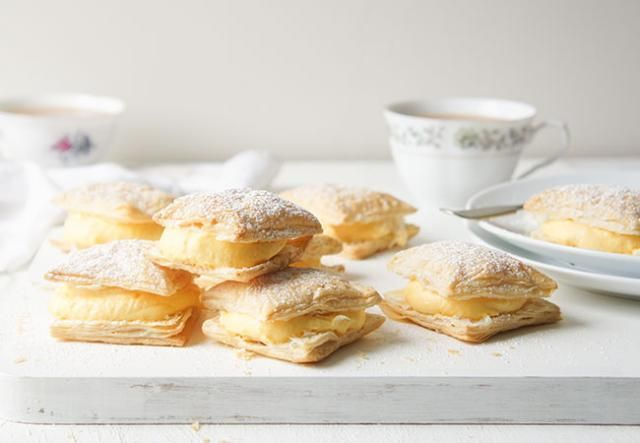
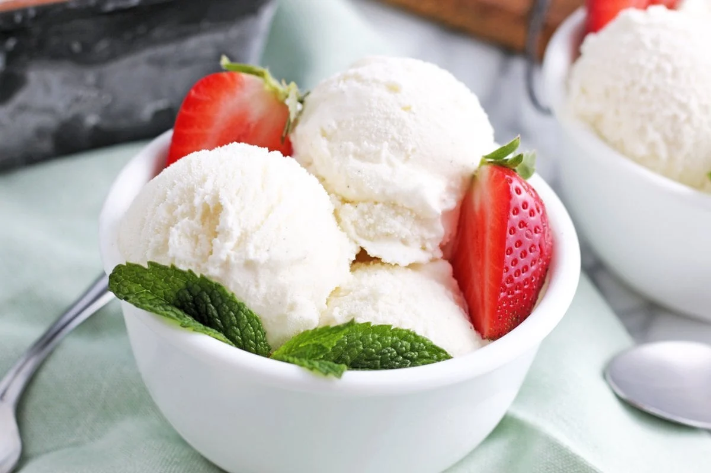

Vanilla Cupcake

Ingredients
- 1 1/4 cups all-purpose flour
- 1 1/4 tsp baking powder
- 1/2 tsp salt
- 1/2 cup unsalted butter, softened
- 3/4 cup sugar
- 2 large eggs, room temperature
- 2 tsp pure vanilla extract
- 1/2 cup buttermilk, or plain kefir, room temperature
How to make
- Preheat the oven to 350°F and line a cupcake/muffin pan with cupcake liners.
- In a medium bowl, whisk together 1 1/4 cups flour, 1 1/4 tsp baking powder, and 1/2 tsp salt. Set flour mix aside.
- In the bowl of an electric mixer, beat butter and sugar on medium-high speed 5 minutes until thick and fluffy, scraping down the bowl as needed.
- Add eggs one at a time, beating well with each addition then scrape down the bowl. Add 2 tsp vanilla and beat to combine.
- Reduce mixer speed to medium and add the flour mixture in thirds alternating with the buttermilk, mixing to incorporate with each addition. Scrape down the bowl as needed and beat until just combined and smooth.
- Divide the batter evenly into a 12-count lined muffin or cupcake pan, filling 2/3 full.
- Bake for 20-23 minutes at 350 °F, or until a toothpick inserted in the center comes out clean. Let them cool in the pan for 5 minutes, then transfer to a wire rack and cool to room temperature before frosting.
Vanilla Cream Puff

Ingredients
- 100 g Cottee's instant vanilla pudding mix
- 300 ml milk
- 1/2 cup caster sugar
- 1/4 tsp vanilla essence
- 1 tbs Bailey’s liqueur, *optional
- 300 ml thickened cream
- 2 sheets puff pastry thawed
- 3 tbs icing sugar for dusting
How to make
- Grease 2 baking trays. Preheat oven to 180C (160C fan-forced).
- Add first 6 ingredients to a mixing bowl. With electric mixer on low speed, mix ingredients for approximately 2 minutes until combined well.
- Beat for a further 4-6 minutes until a thick cream consistency is reached and peaks have formed. Stand for 10 minutes.
- Cut puff pastry sheets into 16 squares each, then place on baking trays approximately ½ cm apart.
- Bake for 10 minutes or until slightly golden. Cool for 3 minutes.
- Cut puffs horizontally through the middle. Spoon 1½ tablespoons of cream mixture into the middle of each puff, then add a pastry lid to the top.
- Cover with foil and refrigerate.
- Just before serving, dust with sifted icing sugar.
Vanilla Ice cream

Ingredients
- 284ml carton double cream
- 300ml full fat milk
- 115g golden caster sugar
- 1 vanilla pod
- 3 large free-range egg yolks
- have lots of ice cubes at the ready
How to make
- Put the canister from the machine into the freezer a day before you want to make the ice cream. Next day, pour the cream and milk into a medium heavy-based pan, then tip in half the sugar. Slit the vanilla pod down its length with a small sharp knife and scoop out as many of the tiny black seeds as you can into the cream mixture. Cut the pod into three and drop it into the pan.
- Heat the cream and milk over a low heat, stirring occasionally, until it almost boils – you’ll see a few bubbles at the edge. Take off the heat and set aside for 30 minutes so the vanilla can infuse.
- Put the egg yolks into a bowl with the rest of the sugar and beat with an electric hand beater for about 2 mins until the mixture has thickened, is paler in colour and falls in thick ribbons when you lift the beaters. Using a measuring jug, scoop out about 125ml of the cream mixture and beat into the egg yolks to slacken them. Reheat the cream until it just comes to the boil, take off the heat and stir in the egg yolk mixture.
- Return the pan to a low heat and cook, stirring all the time with a wooden spoon, for 8-10 mins, until the custard is thick enough to coat the back of the spoon. Watch that it doesn’t boil – as soon as you see any bubbles about to burst to the surface, it should be thick enough, so take the pan off the heat so the mixture doesn’t curdle.
- Pour the custard into a heatproof bowl, then sit it in a bigger bowl one third full of iced water to cool (this takes about 20 mins). Stir occasionally to stop a skin forming. Put the bowl of custard in the fridge for 3-4 hrs, preferably overnight, so it gets really cold.
- Get the ice cream machine running, scoop out the vanilla pod pieces, then slowly pour in the cold custard. Leave it to churn for 10-30 mins (depending on your machine). When it stops, it is probably too soft to eat, so spoon into a plastic container, cover with cling film, then a lid, and freeze for a minimum of 3 hrs. (It will keep in the freezer for 3 months but don’t take it out, then refreeze.) Remove from the freezer 15 mins before serving.
- To make it by hand: in step 1, heat the milk, vanilla, and half the sugar without the cream (the custard will be slightly thicker). At the start of step 6, whip the cream so it’s light and floppy, not too stiff, and fold it into the cold custard. Freeze for 3-4 hrs, stirring once an hour until almost frozen, then freeze as above.